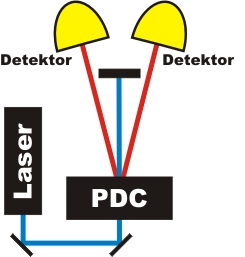
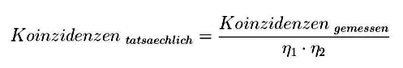

Koinzidenzmethode Kapitel 2:
Methode mit Verlusten
Im letzten Kapitel wurde die Koinzidenzmethode vereinfacht ohne Verluste erklärt. In diesem Kapitel werden die existierenden Verluste im Experiment ermittelt und können herausgerechnet werden. Am Ende dieser Seite wird die Polarisationsabhängigkeit der parametrischen Fluoreszenz mit der Koinzidenzmethode überprüft.
Nachweis der Photonenpaare
In der Photonenpaarquelle (nichtlinearer Kristall) entstehen unter Energie- und Impulserhaltung aus einem Laserphoton der Wellenlänge 405nm zwei Photonen der Wellenlänge 810nm (parametrische Fluoreszenz - PDC). Beide Photonen werden zum Laserstrahl unter einem Winkel von jeweils 3° aus dem Kristall emittiert und mit Detektoren nachgewiesen (Abb. 1). Aufgrund der Energieerhaltung entstehen immer zwei einzelne Photonen, niemals eines alleine. Aufgrund der geringen Effizienz bei der parametrischen Fluoreszenz entstehen immer nur zwei einzelne Photonen. Was müssten beide Detektoren anzeigen, wenn ein Photonenpaar generiert wurde? Im Experiment werden auf Knopfdruck immer so viele Laserpulse abgegeben, bis eine Detektion erfolgt. Führen Sie einige Einzelmessungen durch. Wie kann das Verhalten der Detektoren erklärt werden?

Abbildung 1: Skizze des exp. Aufbaus
Beobachtung und Erklärung:
Nach mehreren Messungen kann festgestellt werden, dass sehr häufig ein einzelner Detektor ein Ereignis registriert und der andere Detektor nicht. Aufgrund der Energieerhaltung müssen aber immer zwei Photonen generiert worden sein. Warum werden so selten beide Photonen gleichzeitig gemessen? Es gibt zwei Gründe für Einzelereignisse: Zum einen das Dunkelrauschen der Detektoren (siehe unter Grundlagen - Kapitel 1) und zum anderen die Verluste im Experiment. Im Experiment können die Gründe nicht unterschieden werden.Beim Dunkelrauschen registriert der Detektor etwas, obwohl nichts vorhanden war. Mit der Koinzidenzmethode können die Dunkelrauschereignisse ausgeschlossen werden: Es ist extrem unwahrscheinlich, das in einem Koinzidenzzeitfenster von 2ns beide Detektoren ein Dunkelrauschereignis besitzen. Alle Koinzidenzen können nur durch zwei einzelne Photonen verursacht worden sein. Eine Koinzidenz ist ein Nachweis, dass auf beiden Seiten des Experimentes jeweils ein einzelnes Photon vorhanden war.
Ein anderer Grund für Einzelereignisse ist der Photonenverlust Es gibt viele Gründe, warum einzelne Photonen nicht registriert werden:
In Experiment werden auf jeder Seite nur ca. 23% Prozent aller Einzelereignisse gemeinsam als Koinzidenzen registriert. Alle anderen Photonen des jeweiligen Paares waren trotzdem anwesend, wurden aber nicht detektiert. Ist die Effizienz η bekannt (η = Koinzidenzen / Einzelereignisse), so kann von der gemessenen Zwillingsrate auf die tatsächliche Zwillingsrate umgerechnet werden [Kly81].

Bei einer Koinzidenzrate von gemessenen 7800 Photonen pro Sekunde (siehe interaktives Experiment unten) und Effizienzen von jeweils ca. 23% könnten im Idealfall ohne Verluste ca. 147.000 Zwillingsphotonen pro Sekunde registriert werden.Das Experiment hat zunächst mit Quantenphänomenen des Lichts nichts zu tun. Es soll hier nur gezeigt werden, mit welcher Methode einzelne Photon nachgewiesen werden können. In allen Experimenten auf der Homepage mit einzelnen Photonen werden nur die Ereignisse verwendet, in denen eine Koinzidenz aufgetreten ist. Alle anderen Detektionen werden durch die Datenerfassung herausgefiltert.
Polarisation und Photonenquelle:
Die Erzeugung der Photonenpaare im nichtlinearen Kristall (Parametrische Fluoreszenz) erfolgt unter Energie- und Impulserhaltung. Für den Prozess muss die Kristallachse in einem ganz bestimmten Winkel zum Laser stehen. Neben dem Winkel ist die Polarisation des Laserlichts für den Prozess entscheidend. Zur Erzeugung von Photonenpaaren muss in unserem Experiment der Laserstrahl linear horizontal polarisiert sein. Die beiden generierten Photonen haben dann immer die vertikale Polarisation. Das folgende interaktive Experiment läuft im kontinuierlichen Modus. Die Polarisationsrichtung des Lichts kann mit Hilfe der λ/2-Platte vor dem Kristall verändert werden. Dazu sind links an der λ/2-Platte zwei dreieckige graue Taster angebracht. Welche Koinzidenzrate erwarteten Sie bei vertikaler Polarisation des Lasers?
Beobachtung und Erklärung:
Die Erzeugungsrate der Photonenpaare ist nur bei horizontaler Polarisation des Lasers maximal. Bei senkrechter Polarisation sinkt die Rate auf wenige Koinzidenzen ab. Eigentlich sollte die Koinzidenzrate bei vertikaler Polarisation 0 sein. Die Abweichung kommt durch nicht ideale optische Komponenten zustande.
Originaldaten aus dem Experiment: Einzelereignisse, Kontinuierlich
Zurück zur Übersicht [klick]
Autor: P. Bronner, April 2008